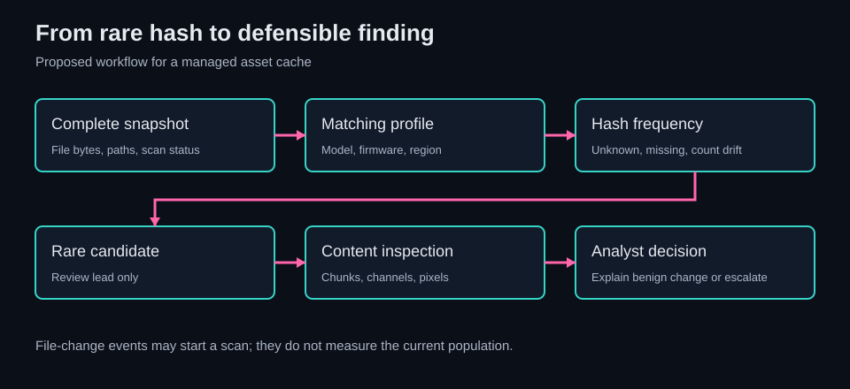

Abacus / Cyber Ops / CTF Writeups / Forensics / The One Tile That Didn't Belong
The One Tile That Didn't Belong
A million files, all 12,051 bytes. Size told me nothing. Repetition did.
Summary
The challenge. Find the single altered PNG in a million-file asset cache from a used embedded device and recover its message.
What I did. I profiled archive sizes, streamed and hashed fixed-size members, extracted the rare image, then read its caption at the pixel level.
The result. The case record reports one singleton and an accepted answer after changing the rendered square-bracket wrapper to the platform's curly-brace form.
The limit. The archive, singleton PNG, hash, and submission receipt were unavailable for replay. The linked lab uses invented valid PNGs and reports review leads, not maliciousness.
Case details
| Field | Value |
|---|---|
| Category | Forensics / embedded asset triage |
| Difficulty | Hard |
| Tags | forensics, embedded, IoT, automotive-telematics, NDIAS, frequency-analysis, deduplication, steganography, solid-archive, large-corpus-triage |
| Status | Solved-Verified |
| Recorded result | One rare PNG led to a pixel-baked message; the corrected wrapper was recorded as accepted |
| Evidence boundary | The acquired archive, image, exact hash, flag interior, and grading receipt are not available here |
Defensive proofs of concept for adapting this case to real environments: browse the GitHub artifacts folder.
1. Problem Statement and Threat Scenario
I was handed an asset cache from a used vehicular head unit. Its archive held a 100 x 100 x 100 directory grid, a million PNGs in all, and each entry was 12,051 bytes. One file carried the challenge's added content. I had no clean reference hash list and no useful size difference to guide me.
The device story matters, but the puzzle only establishes a modified file in a provided cache. It does not establish who placed it or that a real vehicle was compromised. In an acquired device, I would care about the same question: which assets diverge from a known-good population, and what is inside them? That can apply to map tiles, sprites, firmware assets, or other stores with enough genuine repetition to form a baseline. The acquisition and its provenance would have to be handled separately.
2. Techniques, Tooling, and Actions Taken
The first clue was an absence of clues. I listed the archive with 7z l and grouped the PNG sizes with awk. My count came to a million entries of exactly 12,051 bytes. The size-outlier pass found none. I kept that failed branch because it changed the plan: scanning the image names or sorting by length would never isolate the planted one.
I then checked free space with df -h. The machine had 9.7 GiB available; the uncompressed files would need about 11.2 GiB. Full extraction followed by a directory walk would not fit. I switched to 7z x -so, consuming decompressed bytes as a stream and splitting them into 12,051-byte records. That split depended on a strict assumption: the selected archive output had only those uniformly sized PNG members in the expected sequence. I checked the eight-byte PNG signature at every boundary before trusting the hash counts. The reported pass found no bad signatures.
SHA-256 frequencies gave me the useful contrast. The case record describes about a thousand heavily repeated tile hashes and one singleton. It also writes this as 1000 x 1000 + 1, which would be 1,000,001 files, one more than the stated grid. I use the reliable qualitative result, one rare digest among repeated assets, without pretending the exact per-hash histogram was reconciled. A legitimate tile replaced by a unique tile could leave one repeated class at 999 and a singleton, but the retained figures do not prove that was the distribution.
I extracted the candidate image by its reported archive path and checked it for ordinary text and metadata with strings, Pillow's Image.info, and a PNG chunk survey. No plaintext or tEXt, iTXt, or eXIf carrier was reported. The message was in visible pixels near the bottom. Thresholding the red channel above 100 in rows y=238..249 exposed a thin text mask. Column gaps separated 29 glyph groups. I compared the small bitmaps by eye where OCR could confuse 1/l/I, O/0, S/5, or the wrapper characters.
That last distinction mattered. The visible message used square brackets. The first submitted form, FLAG[REDACTED_FLAG_INTERIOR], was recorded as wrong. The platform expected curly braces, and the same interior in FLAG{REDACTED_FLAG_INTERIOR} was recorded as accepted. The two wrapper glyphs in the image had straight vertical strokes and flat lips, with no middle pinch, so the pixel reading and the platform format genuinely differed. I did not quietly relabel the image to make the final answer look inevitable.
3. Tooling and Scripts
3.1 Archive structural survey
The first pass used archive metadata, not decompressed image bytes. This is the command shape I used, with the size column checked against the local 7z l format before relying on $4:
7z l "cache.7z" |
awk '/\.png$/ {sizes[$4]++; if ($4 != 12051) print "OUTLIER:", $0}
END {for (s in sizes) print "size=" s " count=" sizes[s]}'
df -h
The reported result was one size group and no size outlier. df made the next constraint concrete: 9.7 GiB free against roughly 11.2 GiB of PNG bytes. An archive listing can contain directories, headers, and version-specific columns, so I would inspect a sample line before automating this parser on another case.
3.2 Stream-and-hash primitive
The solve used 7z x -so and a Python reader that pulled one 12,051-byte chunk at a time. For each chunk it checked b"\x89PNG\r\n\x1a\n", calculated SHA-256, and incremented a counter. The key logic was:
from collections import Counter
import hashlib
counts = Counter()
for index in range(expected_count):
data = read_exact(stream, 12051)
if len(data) != 12051 or not data.startswith(b"\x89PNG\r\n\x1a\n"):
raise ValueError(f"bad member boundary at {index}")
counts[hashlib.sha256(data).hexdigest()] += 1
My first implementation recorded bad_magic=0 for the million expected chunks. That is a strong framing check for the run. It does not parse the rest of each PNG, authenticate the archive, verify extraction order, or by itself check for trailing stdout bytes and a nonzero extractor exit. Those are prerequisites when using the method again.
The linked asset-frequency reviewer provides bounded stream and trusted-directory modes. Stream mode checks the expected byte count, every PNG signature, extra output, and distinct-hash limits. It reports rare hash ordinals because a raw byte stream carries no path. The lab guide shows the inputs and exit checks. Neither tool has been run on the challenge archive.
3.3 Singleton path resolution
I took a second pass to find the singleton's archive path. The code read path names from py7zr.list() and paired those names with fixed-size chunks from another 7z x -so run. That pairing assumes the two orders agree. A wrong mapping would still give a correct singleton hash and a wrong path.
For an acquired archive, I would confirm that listing order and stdout order agree for the actual 7z version and member selection, then extract the proposed member by name and hash it again. The final digest equality would bind the path to the rare content. My targeted extraction produced a roughly 12 KiB PNG; the path and digest are redacted here.
3.4 Pixel-baked caption reader
Pillow and NumPy handled the visual layer after the rare file was on disk. The selected code isolated img[238:250, :, 0], marked red-channel values over 100, and began a glyph at each nonempty column after a blank. It printed each slice as # and . for manual comparison:
from PIL import Image
import numpy as np
with Image.open("candidate.png") as opened:
image = np.asarray(opened.convert("RGBA"))
if image.shape[0] < 250:
raise ValueError("caption band falls outside the image")
band = image[238:250, :, 0]
mask = band > 100
occupied = mask.any(axis=0)
segments = []
start = None
for column, has_ink in enumerate(occupied):
if has_ink and start is None:
start = column
elif not has_ink and start is not None:
segments.append((start, column))
start = None
if start is not None:
segments.append((start, len(occupied)))
for start, end in segments:
print(f"columns {start}..{end - 1}")
for row in mask[:, start:end]:
print("".join("#" if bit else "." for bit in row))
I counted 29 segments. For the square brackets, I compared the flat top and bottom lips and straight side against the waist of a curly brace. On a tiny font I would still look for touching glyphs, antialiasing, and off-by-one row selection before treating a segment count as a text length. I could not repeat that reading without the image bytes.
4. Concept Explanation
4.1 Asset-cache redundancy as a structural invariant
Exact duplicates make an internal reference set. If a cache repeats a small set of tile bytes many times, a new digest stands out even when every file has the same name pattern and length. SHA-256 is useful here because it groups byte-identical files reliably. It does not make an unusual file malicious. A map update, cache warming, or a one-off legitimate tile can also be unique. The method is strongest after I establish how repetition behaves for that device model, firmware, map region, and acquisition state.
For N files and M distinct tiles with M << N, the average replication factor is N/M. Averages can hide real singletons. I would inspect the whole frequency distribution before choosing a threshold. Copying an emplaced tile into several files would also remove its singleton status without requiring an impossible SHA-256 preimage collision.
4.2 Solid archive access economics
A solid 7z block compresses a run of members together. Repeated random reads can reprocess earlier compressed data, so sequential output is attractive for a full sweep. The case considered py7zr.readall() too memory hungry and targeted per-file reads too expensive. Streaming let the hash pass use little disk and process each byte once.
Uniform size made fixed-width framing possible. That convenience is fragile: one unexpected member, a different length, or stray output shifts every later boundary. The PNG signature is a cheap alarm for that failure. A full PNG check needs more. I need an exact record count, an EOF check, the extractor's exit status, and eventually a digest check on any extracted candidate.
4.3 PNG payload surfaces
I checked several places a message could live. tEXt, iTXt, or zTXt chunks carry PNG text; bytes after IEND are another place to inspect. An alpha channel or low-bit plane needs pixel-level work. This image's message was simpler: a visible caption baked into a narrow band. After the million-file search, reading it became an image-analysis problem rather than an archive problem.
| Surface | First check | What it would establish |
|---|---|---|
| Text chunks | Enumerate PNG chunks and decode permitted text | A metadata message, if present |
| Trailing bytes | Walk declared chunks through IEND |
Data beyond the PNG datastream |
| Pixel low bits | Inspect channels and statistics | A candidate covert payload, not an automatic decode |
| Visible caption | Render and inspect a channel mask | The text carried by displayed pixels |
5. Exploit/Analysis Mechanics
The classifier was a count of exact content digests. For each file f, calculate h = SHA256(f) and increment count[h]. Then review digests with much lower counts than the repeated groups. In the reported challenge, one digest had count 1. That was the lead, not a verdict. I still had to bind it to an archive member and inspect the image.
inventory -> fixed-size stream -> boundary checks -> SHA-256 counts
-> rare digest -> verified extraction -> caption analysis
I initially called the challenge precision 1.0. That would require ground truth for all flagged and unflagged files; I had one singleton and a solved puzzle, not a measured detector precision. A current reference set matters more than the collision resistance of SHA-256 for real-world false positives. A malicious edit to one copy creates a new hash; an edit to every copy can create a common new hash. Perceptual hashes might group visually similar tiles, but they do not automatically detect all low-bit payloads, and I did not test that fallback.
The million boundary signatures I recorded as valid make a framing slip less likely. They do not prove that all bytes were authentic PNGs, that every member belonged to the intended grid, or that the archive had a trusted origin. Those checks belong in a production acquisition workflow.
6. Lessons Learned
Validated
The size survey was worth doing even though it failed to find the target. It ruled out a cheap discriminator in seconds. The disk check kept me from starting an extraction that could not fit. The streaming hash pass then changed the search from a million manual opens into one frequency table and one focused image read.
The wrapper mistake also stays in my notes. The pixels supported square brackets; the grader required curly braces. Keeping both facts is more honest and more useful than smoothing the attempt into a single successful submission.
Surfaced gaps
The bitmap reader was a local one-off. A reusable reader could display each glyph beside candidate font templates and a confidence score, especially for 1/l/I and O/0. I would still verify the low-confidence glyphs manually. I considered perceptual hashing and LSB analysis as follow-ups, but exercised neither in the solve; I have not promoted them to validated detectors.
The archive-path lookup also needs an explicit order check. The raw hash pass can point to a digest and stream ordinal. Assigning a file name requires a matching index or a second extraction whose bytes hash to that digest. The synthetic lab tests cover repeated assets, an ordinary new tile that appears rare, and malformed streams. They do not test 7z, path resolution, OCR, or the challenge's million-member runtime.
Transferable principles
I would use the same sequence on a large file population: measure before extracting, check the storage budget, look for natural repetition, validate parser boundaries, and investigate anomalies as leads. In a SOC, rarity also appears in process trees or loaded modules, but those events need their own baseline and context. A rare file hash alone says little about intent.
7. Extrapolation
For my own practice, this case sharpened a useful combination: archive economics, simple statistics, and patient pixel inspection. The million-file count sounded like a brute-force problem. Once I saw the cache's repetition, the question became which equivalence class had changed. I still needed to understand the solid archive well enough to read it without filling the disk.
For a responder, I would collect a complete asset snapshot and compare it against a reference for the same device model, firmware revision, and content region. A file integrity monitor that only knows a set of approved hashes may miss the shape of the population; a frequency report can show a new singleton, a reduced repeated group, or a whole new common group. In a managed web or container asset directory, on-write events can trigger the scan. They cannot replace the snapshot. A new file event tells me about a change, not how many distinct files currently share its bytes.
The device story also raises privacy issues. A real head unit may retain map tiles, destinations, paired-device records, and other location-linked traces. Any wider acquisition would need authority, a chain of custody, and data minimization. I would not infer a driver's travels from this puzzle's synthetic grid. A vendor or upstream tile set might help build a reference, but mismatches could also come from firmware changes, regional content, or a different provider. Those explanations need testing before an attribution claim.
8. Reusable Tools, Scripts, and Artifacts
8.1 Triage decision tree
My practical order is: inventory count and sizes, check free space, choose a safe access path, calculate frequencies, then inspect rare candidates. If member sizes vary, I group by size or use a format-aware extractor rather than pretending the byte stream has fixed records. If no rare digest appears, I look for a clean reference set, changes in expected counts, or visual differences. Perceptual matching and bit-plane analysis are further experiments, not results from this case.
The decision is never "singleton equals malicious." The asset-frequency reviewer emits review_candidates to make that boundary explicit. Its tests show an innocent vendor tile receiving exactly the same rarity label as an invented planted tile. This is the false-positive case I want a defender to see before building an alert.
8.2 Reusable primitive: corpus_freq.py
My corpus_freq.py sketch walked an extracted directory, hashed each file in 1 MiB blocks, counted SHA-256 digests, and printed counts below a configurable threshold. That is a useful small-dataset primitive. It does not solve the disk constraint I met, map a digest back to a path, cap resource use, or compare against a revision-matched baseline.
I put the reusable version in one bounded Python tool. directory mode reports sample relative paths. stream mode works on fixed-size decompressed stdout and reports record ordinals. It refuses a short record, bad PNG signature, extra output, and over-limit work. The tool's inputs are a trusted local directory or a verified byte stream, an expected file size and count for stream mode, and a rarity threshold. Its JSON output carries counts and review leads. The README spells out the data mapping and the checks still required to assign an archive path.
8.3 Solve-pattern checklist
- Record the archive count, uncompressed size, member sizes, file types, and available disk space.
- Inspect a sample
7z lline before using a column-based parser; verify the archive and acquisition hashes under the case workflow. - Pick full extraction only if resources permit. For a fixed-size stream, verify member selection, output order, count, each boundary, EOF, and extractor exit status.
- Count exact hashes. Review singleton and low-count groups against legitimate updates and expected distribution.
- Resolve a candidate path by verified content hash after targeted extraction, then inspect chunks, strings, channels, and pixels.
- Keep the visible message separate from a platform-specific submission wrapper. Record both attempts and the observed verdict.
9. Framework Mapping
9.1 Tier 1 - Standing checklist (present at every tier)
The puzzle has an emplaced PNG with a visible caption. ATT&CK T1027.003 is useful context for information hidden in media, but I did not find a covert bit plane, executable payload, or real adversary activity. I would map it as an analogy only. T1564 is similarly broad context for hiding artifacts. T1005, data from local system, would require a collection step that this case does not show.
ATLAS and the OWASP LLM list have no AI component to map. OWASP Web Top 10 does not describe this filesystem acquisition. CVSS, EPSS, and KEV apply to vulnerabilities and CVEs; I found an altered asset, not an exploit of a software flaw. The cloud control catalogs are outside this on-device case unless a specific connected service is later found.
9.2 Tier 2 - Frameworks that add analytical value
| Reference | Fit to this case |
|---|---|
| D3FEND D3-FH, File Hashing | The exact digest is the core grouping primitive; the population-frequency extension is my analytic design. |
| D3FEND D3-FCOA, File Content Analysis | Inspecting chunks and caption pixels is static file-content work. |
| CAPEC-636 | A nearby pattern for data hidden inside files, but its description centers on less visible file facilities; this caption was visually present. |
| NIST SP 800-53 SI-7 and SI-4 | Integrity checks and monitoring are sensible places for a managed cache baseline; the puzzle does not prove a deployed control. |
I first labeled D3-FBA "File Behavior Analysis." D3-FBA is Firmware Behavior Analysis, so I leave it out of the asset-frequency mapping. CWE-506 concerns embedded malicious code; this case reports text in an image, with no malicious code shown. STRIDE could help design a future device threat model, while CACAO or OpenC2 would matter if a response playbook were actually exchanged. None was used here.
10. Threat Intel and Standards Integration
I have no actor, campaign, infrastructure, or transferable challenge hash to publish as threat intelligence. The reported digest and flag interior are redacted. A behavioral observation travels better: a full snapshot of a highly repetitive static cache contains a new, contextually unexplained image hash, and content review finds a caption inconsistent with the expected asset. That statement still needs the baseline profile attached. Without it, another team cannot tell whether a singleton is ordinary cache behavior.
I sketched a STIX 2.1 attack-pattern, indicator, and course-of-action bundle with placeholder IDs and dates. It communicates the intended structure, but the placeholders cannot be exchanged as a valid STIX object. An indicator for one redacted file hash would also be brittle, and a STIX file-hash pattern cannot express "count this hash across a firmware-matched population" on its own. I would publish a STIX bundle only after validating identifiers, timestamps, relationships, pattern syntax, evidence provenance, and an actual observable worth sharing. No TAXII exchange took place.
For an organization operating connected devices, CIS Controls v8 1.1 can put those devices in inventory and 8.5 can support detailed audit collection if the platform exposes it. Retention and disposal are separate policy questions. A generic operating-system STIG identifier does not establish that a head unit can emit the needed events or that it has been assessed against that profile.
11. Controls Mapping and Mitigation Realization
11a. Standards mapping (abbreviated for T2)
| Control | Practical realization | Status here |
|---|---|---|
| NIST SI-7 | Compare a complete asset snapshot with a clean model-and-revision baseline; review unknown, missing, and changed-frequency digests. | Proposed |
| NIST SI-4 / AU-6 | If the device or acquisition pipeline emits events, retain scan summaries and review exceptions with a human case record. | Proposed |
| NIST MP-6 | Define verified media-sanitization steps for devices leaving an organization; keep evidence of the disposition. | Separate from inbound anomaly detection |
| CIS 1.1 / 8.5 | Inventory the device and collect relevant audit events where supported. | Applicability depends on platform telemetry |
11b. Mitigation realization
My evaluate(reference, observed, tolerance=0.1) sketch compared three conditions: unknown hashes, count deviations, and missing hashes. I would keep all three. A new rare digest is only one class of drift. The reference must be scoped to the same device model, firmware revision, map-data version or region, and snapshot completeness. A threshold of 10% is a starting example, not a tested alert threshold.
An analyst should first check acquisition completeness and update timing. A missing hash could reflect a partial cache. A count change could reflect a lawful map refresh. An unknown hash could be a new tile. Once those causes are considered, the candidate can go to metadata and pixel review. The local tool gives the frequency observation; it does not provide that baseline comparison or a quarantine decision.
For outbound used hardware, MP-6 is about a documented sanitization and verification process. A factory reset alone does not prove every user-data partition was cleared. For inbound hardware, I would preserve the device and compare its assets with a trusted reference before changing it. Those are different custody workflows. The SOC playbook would inventory the device, acquire a revision-matched reference, hash a complete snapshot, triage unknown/missing/count changes, and record the disposition.
12. Indicators, Artifacts, and Detection Engineering
Detection maturity: synthetic local proof of concept. The reviewer and test suite exercise exact-hash rarity on invented valid PNGs. No challenge cache, deployed FIM, Windows sensor, SIEM backend, or measured field false-positive rate was tested.
12.1 Illustrative IOCs (sanitized)
The digest and path are redacted, so I have no useful hash IOC to share. The grid shape <archive_root>/<X>/<Y>/<Z>.png describes this cache; other products will differ. The behavior worth preserving is "a rare exact hash in a population expected to contain many repeats, followed by content that fails the asset's purpose." Pixel-baked text is a review clue; benign maps can also carry labels.
12.2 YARA scaffolding - PNG carriers with bottom-band caption structure
My YARA sketch checked the PNG signature, IHDR, IDAT, IEND, and a size under 50 KiB. That is a broad PNG funnel. YARA byte conditions cannot prove there is caption text in the bottom band; a normal map tile could satisfy the rule. I would only use it to preselect files for a format-aware image inspection, then test the pixel logic on actual benign and altered assets. A size cap may also exclude a valid candidate. I did not ship that broad rule as a production detector.
12.3 Sigma scaffolding - new file in high-redundancy static directory
I sketched a Sigma rule for Windows file-create events in two static paths and filtered some installer processes. That might flag an unexpected write to a managed directory. It cannot establish the hash distribution of the directory, and filtering installer names could suppress a relevant event. A path policy needs to reflect the real deployment and its content-update mechanism. The embedded acquisition here has no Windows file-event stream. I would use a Sigma rule only after confirming a sensor, field mapping, change windows, and benign updates in a target environment.
12.4 SIEM detection scaffolding
My first SPL and KQL sketches counted events by file hash over a time window. One file can create multiple events, while an unchanged file may create none. That count is not the number of files in a snapshot. Microsoft's DeviceFileEvents schema also says SHA256 is usually unpopulated. An EDR query alone would miss many assets here.
For an actual SIEM, I would ingest one record per digest from a scheduled, complete scan, with snapshot_id, device_model, firmware_rev, content_region, sha256, file_count, scan completion, and acquisition time. A query then selects file_count < threshold within a verified profile and joins a revision-matched baseline for unknown or missing hashes. The local reviewer already emits a frequency histogram and candidate counts as JSON, but an ingestion adapter and backend-specific field mapping remain to be built. No SPL or KQL execution is claimed.
With an adapter that emits one row per digest into a custom AssetFrequency_CL table, the KQL shape would be:
AssetFrequency_CL
| where ScanComplete_b == true
| where DeviceModel_s == "approved-model" and FirmwareRev_s == "approved-revision"
| where SnapshotId_s == "selected-complete-snapshot"
| where FileCount_d < 3
| project SnapshotId_s, SHA256_s, FileCount_d, ExamplePath_s
The equivalent SPL assumes a sourcetype=asset_frequency with the same normalized fields:
index=asset_inventory sourcetype=asset_frequency scan_complete=true
device_model="approved-model" firmware_rev="approved-revision"
snapshot_id="selected-complete-snapshot" file_count<3
| table snapshot_id sha256 file_count example_path
Those are integration sketches, not tested alerts. The adapter must reject partial scans and guarantee exactly one digest count per snapshot. I would add an unknown-hash join only after a trustworthy matching reference set existed. A genuine deployment also needs retention, access controls, and review of benign update windows.
12.5 Telemetry requirements
| Task | Required data | Limit |
|---|---|---|
| Full-cache frequency scan | Complete file bytes, paths or verified ordinals, device/profile identity, scan time | A path list alone does not supply content hashes |
| Change trigger | File creation/modification event and stable asset path | Triggers rescan; does not measure population frequency |
| Candidate content review | Extracted PNG bytes, chunk list, safe image render, channel mask | Visual anomaly needs analyst context |
| Acquisition record | Source device, image digest, custody record, parser/tool versions | Necessary for real evidence handling |
12.6 Detection notes
The clean puzzle made the singleton compelling. A live cache moves. Cache warming, partial sync, regional tile differences, and firmware updates can all produce rare files. I would tune by device and content profile and compare full snapshots, then let a reviewer inspect unknown tiles. A blanket 24-hour quarantine could delay a real finding or clear it for the wrong reason; the window should be tied to known update behavior. An adversary can also duplicate the altered tile until its frequency looks ordinary. Semantic fit and trusted reference content are separate checks.
13. Visual Artifact
The diagram near the top follows my solve: size survey, disk check, stream hash, image read, and wrapper correction. This second defender-side diagram shows what would have to exist to turn the case into an operational hunt. The snapshot and profile come first. A rare digest leads to content review and a case decision; standards help place the work, but do not supply telemetry or validate the alert.


14. References
- 7-Zip
-soswitch documentation and 7-Zip SDK for the archive access method. - RFC 2083, PNG specification for the signature and chunk model.
- NIST SP 800-53 Rev. 5 for SI-7, SI-4, AU-6, and MP-6; NIST SP 800-86 for forensic process context.
- MITRE ATT&CK T1027.003, CAPEC-636, D3FEND File Hashing, and File Content Analysis for the qualified technique discussion.
- CIS Controls v8 navigator, STIX 2.1, and Microsoft DeviceFileEvents schema for the proposed operational handoff and its limits.